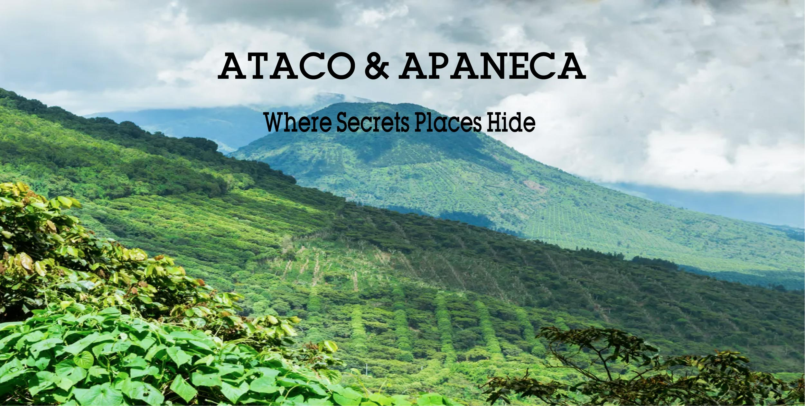
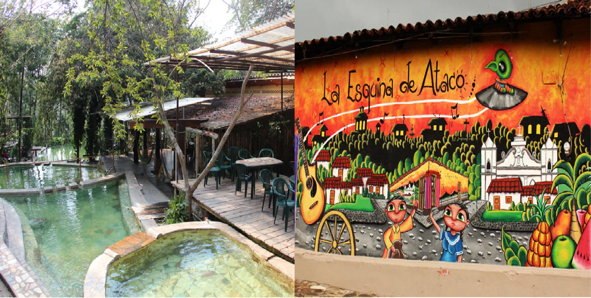
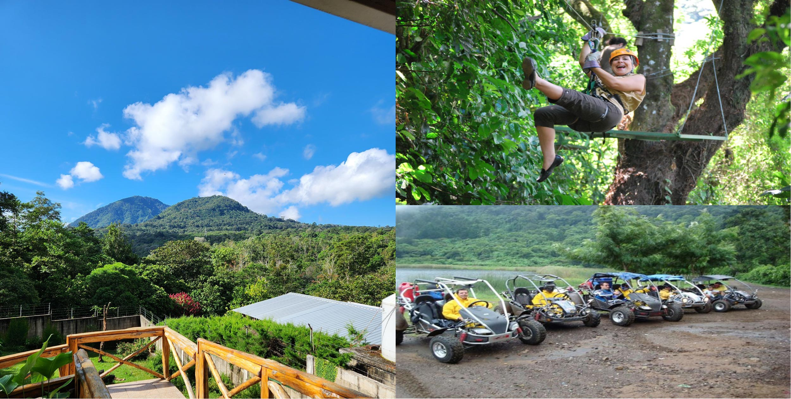

In the West of the country, between mountains and important elevations above sea level,
the Cordillera de Apaneca stands out, reaching an approximate height of two thousand
three hundred and eighty-one meters above sea level. Concepción de Ataco is part of
the famous Ruta de las Flores where five municipalities in the Department of Ahuachapán
such as Apaneca, Juayúa, Salcoatitán and Nahuizalco, interconnect by a road known as
the Ruta de Las Flores. During a trip along this road you can see sunflowers and
an endless number of different species of flowers.

Ataco is a very colorful small mountain town rich with old infrastructures,
whose origin name Nahuatl means “ place of high springs ”. The area is known for
one of the best areas for coffee plantations in Central America, for coffe lovers
the town have available the best coffee of the region in all the different
coffee shops ans stores.
Ataco become very popular as you can find hostals in town and also mountain hotels
with more confort in the suroundings, you find a few bars with live music during
the nights, several restaurants with the best traditional dishes and a great weather
to relax and have a quiet holiday.
If you want to relax even more, you are in luck as Ataco is also know for their
Hot Springs. Set on the skirts of an active volcanic belt and surrounded by
beautiful gardens, this places offers peace and relaxation as well amenities such
as restaurants, a complete bar, excellent coffee, spa and massage services.

It is the integral city of the Las Flores Route with the highest height above
sea level, with 1,470 meters. Its Nahuatl origin name means “ where windblers -
wind rivers abound ”. Due to its altitude, the area produces the highest quality coffee.
The hotels and restaurants attached to its two lagoons “Las Ninfas” and “Laguna Verde”
attract tourists to this pre-Hispanic city where the sculptures known as “Gordinflones”
are located. located on coffee farms. The practice of adventure sports as a tour in
buggies and canopy, as well as ecotourism such as landscaping and hiking, can be practiced there.
Just as Ataco this town has also become popular in rental houses in the mountains,
to go and escape from the everyday. Relax with the whole family or friends in the
quiets places you can stay. Enjoying a cool climate with a spectacular views, this
are places to explore if you search to disconnect from your life.